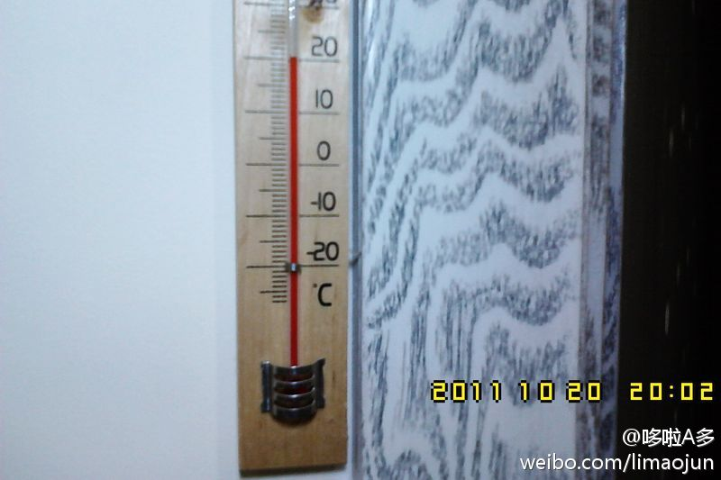
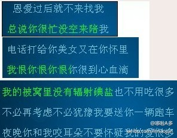

小悦悦被撞后，为什么陈贤妹会伸出援手？这绝不是偶然，完全是受教育不够的结果。她早年没读过几天教科书，多年来又忙于谋生，不读书不看报，不注意理论学习，不主动接受宣传，没能改造世界观，结果导致良知未泯，天性犹存。
现在屋里的温度是20°~挺好，不冷也不热的~早晨上班的时候发现走廊里的灯终于在连续亮了一年多以后烧断了灯丝，正好柜子里还有一个剩下的灯泡，踩着凳子拧上以后，瞬间觉得这不对啊，怎么比原来亮那么多。。看了手里的灯泡才知道，原来那个灯泡是25W的，我新换上的是100W的，物业知道了会不会气疯啊~~~ 
忽然有天，仿佛所有的山寨机里的凤凰传奇都换成了《伤不起》……！凤凰传奇过时了，慕容晓晓过时了！！这一刻，山寨战胜了郁可唯！这一刻~荷塘也没了月色！这一刻，爱情也不能买卖了！这一刻郎也没啥诱惑了！Oh,my Dog！！！ 